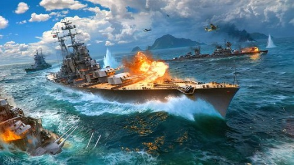
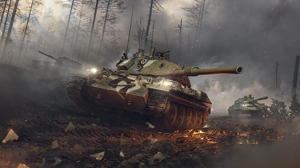
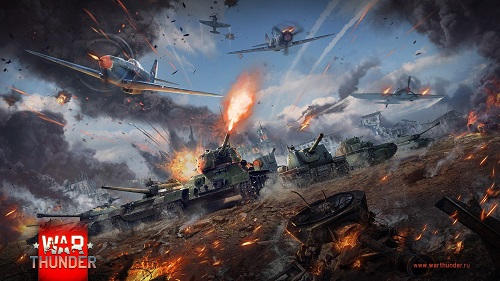
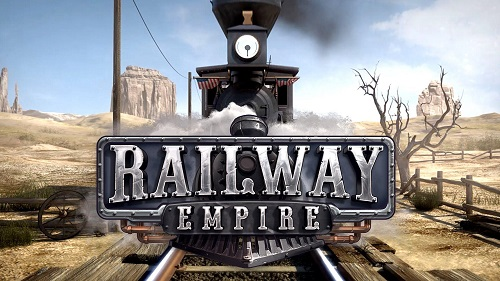
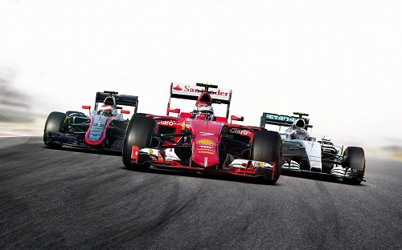
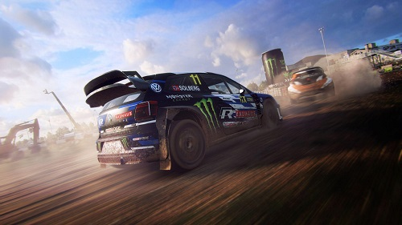
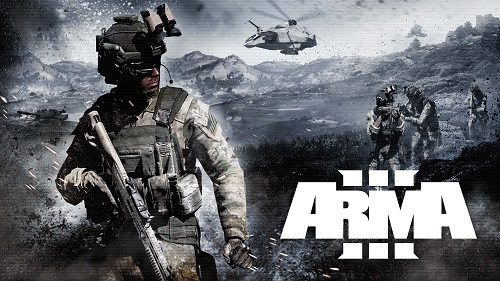
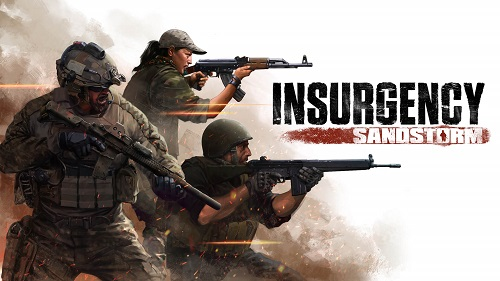

Simulation Games
A simulation game attempts to copy various activities from real life in the form of a game for various
purposes such as training, analysis, or prediction. Usually there are no strictly defined goals in the
game, with the player instead allowed to control a character or environment freely. Well-known examples
are war games, business games, and role play simulation.
World Of Warships

World of Warships is a free-to-play naval warfare-themed massively multiplayer online game
produced and published by Wargaming, following the earlier games World of Tanks and World of
Warplanes. Players can battle others at random or play cooperative battle types against bots
or an advanced player versus environment (PvE) battle mode. For the most skilled players,
two seasonal competitive modes are also available. World of Warships was released in 2015.
World Of Tanks

World of Tanks (WoT) is a massively multiplayer online game developed by Wargaming,
featuring mid-20th century (1930s–1960s) era combat vehicles. Game is free-to-play, but
participants also have the option of paying a fee for use of "premium" features. The focus
is on player vs. player gameplay with each player controlling an armored vehicle. World of
Tanks has been ported to multiple gaming consoles. World of Tanks was followed by World of
Warplanes and World of Warships.
War Thunder

War Thunder is developed and published by studio Gaijin Entertainment. It had its official
release on 21 December 2016. It has a cross-platform format for Microsoft Windows, MacOS,
Linux, PlayStation 4, Xbox One, and Shield Android TV. Initially, Gaijin claimed after the
game was announced that it was an April Fools joke before confirming its existence in June
that same year. Since then, Gaijin has continued a yearly tradition to prepare
unconventional events for April Fools' Day.
Railway Empire

Railway Empire is a rail tycoon simulation game developed by Gaming Minds Studio and
published by Kalypso Media. It was released on 26 January 2018. Railway Empire's base game
takes place in the United States from 1830 to 1930. The player can build a large network of
railway lines and buy various locomotives to serve cities and industries - growing cities in
the process, and hire railway personnel for both train operations and office positions, all
with individual bonuses and personality types. The game has five main game modes: campaign
mode, scenario mode, free mode, sandbox mode and challenge mode.
F1

F1 2020 is the official video game of the 2020 Formula 1 and Formula 2 Championships
developed and published by Codemasters. It was released on 7 July. The game is the twelfth
main series installment in the franchise, and it features the twenty-two circuits, twenty
drivers and ten teams proposed in the provisional 2020 Formula 1 World Championship. F1 2020
features the championship as it was originally intended to be run before the championship
was disrupted by the COVID-19 pandemic, which saw several races postponed or cancelled, with
races at other circuits held.
Dirt Rally

Dirt Rally is developed and published by Codemasters and is part of the Dirt franchise. The
game was released on 7 December 2015. A sequel, Dirt Rally 2.0, was released in February
2019. Players compete in timed stage events on tarmac and off-road terrain in varying
weather conditions. On release, the game featured 17 cars, 36 stages from three real world
locations and asynchronous multiplayer. Codemasters announced a partnership with the FIA
World Rallycross Championship in July 2015, leading to the inclusion of the Lydden Hill Race
Circuit (England), Lånkebanen (Norway), and Höljesbanan (Sweden) to the game.
MS: Flight Simulator

Microsoft Flight Simulator is a series of amateur flight simulator programs for Microsoft
Windows operating systems. It is one of the longest-running, best-known, and most
comprehensive home flight simulator programs on the market. It was an early product in the
Microsoft application portfolio and differed significantly from Microsoft's other software,
which was largely business-oriented. At 38 years old, it is the longest-running software
product line for Microsoft, predating Windows by three years.
ARMA 3

ARMA 3 is developed and published by Bohemia Interactive. It was released in September 2013.
ARMA 3 takes place in the mid-2030s, on the islands of Altis and Stratis in the Aegean Sea,
and the South Pacific island of Tanoa. The single-player campaign has the player take
control of U.S. Army soldier Corporal Ben Kerry. During the campaign, the player is placed
in a variety of situations, from lone wolf infiltration missions to the commanding of
large-scale armored operations. The player is able to choose different objectives and
weaponry according to their play style.
Insurgency: Sandstorm

Insurgency: Sandstorm is developed by New World Interactive and published by Focus Home
Interactive. Set in an unnamed fictional Middle Eastern region, the game depicts a conflict
between two factions: "Security", loosely based on various world militaries, and
"Insurgents", loosely based on various militant groups. It was released on December 12,
2018. The PlayStation 4 and Xbox One versions have gone through various delays, those, as
well as the PlayStation 5 and Xbox Series X/S ports, are scheduled for release in the first
half of 2021.